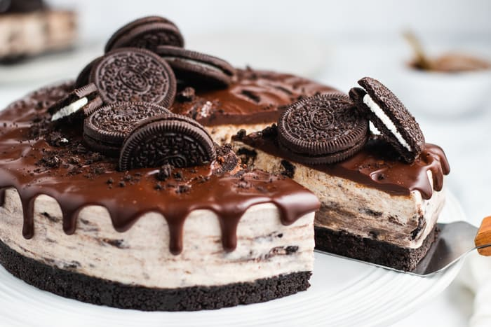

Oreo Cheescake

Description
Oreo cheesecake is a decadent dessert that combines the rich, creamy texture of traditional
cheesecake with the beloved crunch of Oreo cookies. The base is often made by blending crushed
Oreos with butter, creating a perfect crust that complements the smooth filling. The cheesecake
itself is made with cream cheese, sugar, and eggs, creating a dense yet velvety texture.
Topped with crushed Oreos and a drizzle of chocolate or caramel sauce, Oreo cheesecake is a
crowd-pleaser that brings together the best of both worlds—cheesecake and cookies. Whether served as
individual slices or in a larger, shared form, it's a dessert that's both indulgent and satisfying,
making it a favorite for parties, gatherings, or a special treat.
Ingredients
- 24 Oreo Cookies, divided
- 3 tablespoons butter, melted
- 3 (8 ounce) packages Philadelphia Cream Cheese, softened
- ¾ cup sugar
- 1 teaspoon vanilla
- 3 large eggs
Steps
- Gather all ingredients. Preheat the oven to 350 degrees F (175 degrees C).
- Place 16 cookies in a resealable plastic bag. Flatten bag to remove excess air, then seal bag. Finely crush
cookies by rolling a rolling pin across the bag.
- Place crushed cookies in a bowl. Add melted butter; mix well.
- Press mixture firmly onto bottom of a 9-inch springform pan.
- Beat cream cheese, sugar, and vanilla in a large bowl with an electric mixer on medium speed until
well-blended.
- Beat in eggs, 1 at a time, until just blended.
- Chop remaining 8 cookies; gently stir 1/2 of the chopped cookies into cream cheese batter.
- Pour over prepared crust; sprinkle remaining chopped cookies on top.
- Bake in the preheated oven until center is just set, about 45 minutes.
- Refrigerate for 3 hours to overnight. Cut cheesecake into 12 equal pieces; store leftovers in the
refrigerator.
Home